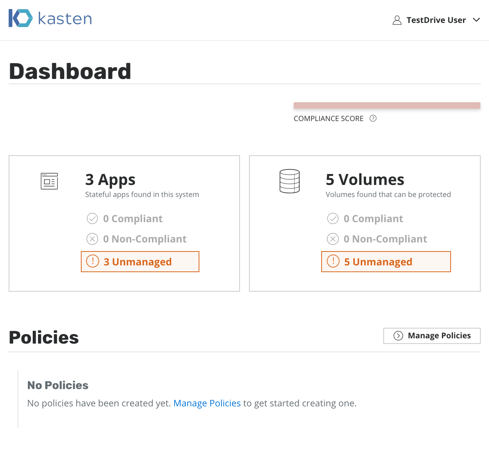

Test Drive¶
TODO: REFACTOR ALL OF THIS
Getting Started¶
We have setup a test Kubernetes cluster in either GKE or AWS for you with a sample application to experiment with. However, we encourage you to install your own applications too.
We would like you to perform the actions required to transition into a 100% compliant state (more on that below) as well as deploy other sample applications to see how they behave.
Warning
Our test drive clusters should not be used for production as they can be torn down or updated in a destructive manner. Please do not install applications or data there that you care about. You will likely lose them.
Note
Please view the current system's Restrictions first as certain features have been disabled for this version.
Our goal during the first part of the test drive will be to bring the system into compliance by defining policies to protect pre-existing applications.
Test Drive Quick Start¶
Kasten Dashboard¶
To access the test cluster setup for you, please refer to your welcome email. It contains:
- The cluster URLs (e.g.,
https://your-testdrive-url.example.com/) for two Kubernetes clusters - Username/password cluster credentials
- The kubernetes configuration for
kubectlto deploy any of your sample applications
To verify connectivity, please go directly to the provided URLs and see if the K10 dashboard loads for you. If successful, you will see an image that looks like this:
Picture Gallery (Sample App)¶
You can access the sample picture-gallery application at
https://your-testdrive-url.example.com/picture-gallery by clicking
on the top left portion of the screen and using these credentials:
- login: testdrive_user
- password: test_password
This multi-volume application can be used to experiment with snapshots, restores, and migration.
Accessing the Kubernetes Dashboard¶
The Kubernetes dashboard can be accessed at
https://your-testdrive-url.example.com/dashboard/. While it does
not need any credentials and only allows access to the default
namespace, do note that we have observed upstream dashboard bugs
where restricted RBAC permissions sometimes bounce the browser
back to the main landing page.
Modifying Application State¶
If you are using your own application or data service, please follow application-specific methods for mutating state in the underlying data stores.
If you are using the picture gallery application for experimentation,
log into your picture-gallery application at
https://your-testdrive-url.example.com/picture-gallery by clicking
on the top left portion of the screen and using these credentials:
- login: testdrive_user
- password: test_password
At this point, you should see something like this:
You can upload a new image or simply delete all images by clicking on the Unsorted album → Clicking the Trash icon in the top right corner → Selecting Clear Unsorted. At this point, the gallery should be empty and look like this:
Restoring Applications to a Pristine State¶
Restoring the selected application is also accomplished via the
applications page. Click to expose the dropdown and select Restore
App

At that point, you will have an option to pick a Restore Point, a grouped collection of data artifacts belonging to the application, to restore from. This view also easily distinguishes manually generated restore points from automated policy-generated ones.
Selecting a restore point will bring up a side-panel containing more details on the restore point.
Once you click Restore, the system will automatically recreate the
entire application stack.
Note
Restore can take a few minutes as this depends on the amount of data captured by the restore point. The restore time is dominated by how long it takes to rehydrate this data in the underlying cloud provider followed by recreating the application containers. Please be patient.
After restore completes, you will be able to go back to your application and verify that the state was restored to what existed at the time the restore point was obtained.
In case of the picture gallery application, re-login to the picture gallery and you will observe that the state is as it was at the time the selected snapshot was taken:
In case of the picture gallery application, re-login to the picture gallery and you will observe that the state is as it was at the time the selected snapshot was taken:
If you have deployed Kasten into your own clusters, you will be able to test migration by combining multiple of the above options. If you are using our testdrive system, that is currently setup to enable cross-cluster migration but can be easily modified to support the others too.

{kind=link}
{kind=link}
{kind=link}
{kind=link}
{kind=link}